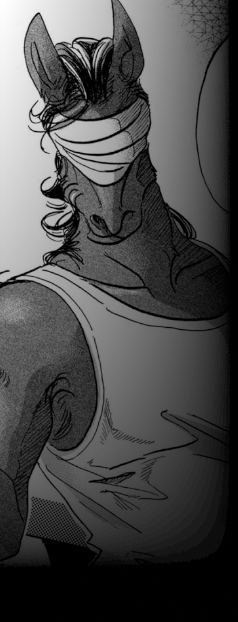

ラグナロク以前から存在し、能力者差別撤廃の運動を武力闘争で行う過激団体。
キーワードは【差別解放】【革命】。
民主機構オルレアン、抑制機構テセウスとは思想の違いにより袂を分かっている。
前身となったのは能力者差別、特に見た目の変化から最も差別されるトランス能力者を主軸とした団体であり、
当時はまだ武装闘争などは行っていなかった。
しかしラグナロク以後、【グングニル】【ルーン企業連】などノーマルを主に置いた組織がユグドラシルを制御している現状によって
ラグナロク以前よりもノーマル・能力者間の摩擦が増えたこと、
何より能力者革命を掲げたテセウスの敗北が契機となり、現在の武力による過激な革命をする団体へ至った。
現グングニル体制の解体と特区エデンの解体、投獄されている【代表者：ヤフヤ】の解放を軸に
ゲリラ活動やテロ活動など武力によった革命運動を続けている。
主な参加者は以前から差別対象であったトランス能力者、非差別能力者であるが
上層のノーマル主義の下、中層や下層へ落とされた能力者やその関係者など不当に扱われた能力者も多く参加している。
グングニル下に組み込まれたオルレアンやテセウスの離反者も多く受け入れている。
逆に過激な活動に賛同できなくなった者はオルレアンなどに鞍替えもしている。
代表者は【ヤフヤ】と呼ばれる馬のトランサーであるが、グングニルにより投獄されている。
代表者不在の元、規模だけは拡大し組織の収拾がついていない事や、
一斉摘発を回避するためにそれぞれで潜伏している事などにより、具体的な規模は不明である。
監視の厳しい上層や能力者差別の少ない下層にはおらず、中層に多く存在する。
|
 |
ヤフヤ
能力者解放戦線の現代表、常に馬人の状態であり、人間体へは戻る事ができない。
ラグナロク以後の活動でグングニルに確保され、現在投獄の身である。 |